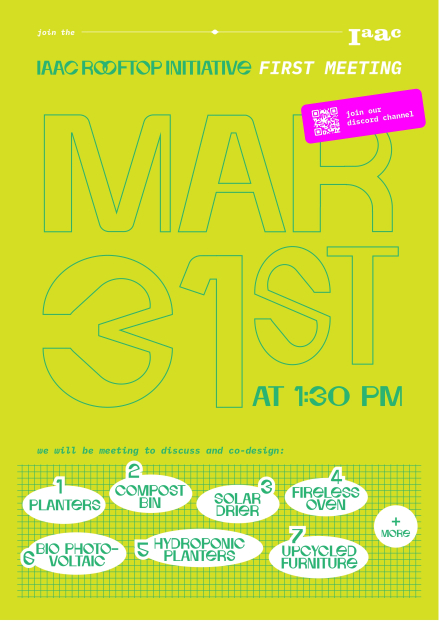
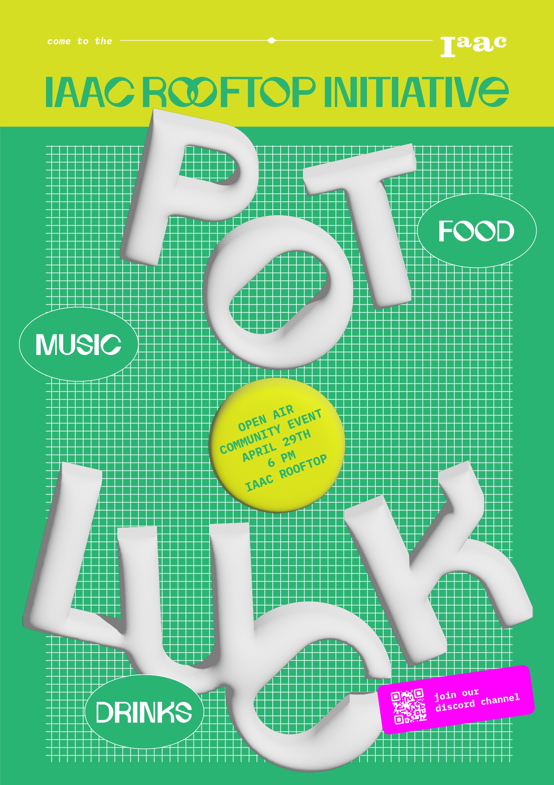

After reevaluating all my interests, I decided to start testing some approaches of the subjects I wanted to develop. I will start by enlisting them and their possible reach.
ROOFTOP INITIATIVE.
Many of my fellow classmates had similar interests, we were all trying to collaborate in each others' projects and learn from one another. That's when we decided to team up and have one project amongst all. We decided to approach the rooftop of IAAC because we spend a lot of time there, there's a lot of space which is not being used due to lack of furniture or design. We realised its mainly where everyone goes to eat, chill, talk and just unwind. Some of our projects relate to a more sustainable way of living which we though would integrate nicely into the everyday activities of the rooftop and its users. We want to provide the students with the facilities to enjoy the space while connecting with nature and taking care of the natural habitat around us.
We decided to combine our projects and integrate the students of other masters and employees of IAAC to codesign the space so it fills everyone's needs. We designed this poster to call to action other people.
After this first poster was sent we met some people at the design dialogues who wrote down on a piece of paper their thoughts of what they would like to see in the rooftop and the uses they give to it. This helps us get more insights as to what people would like to see in the rooftop and what needs we need to fulfill. We also had a meeting with interested students in the rooftop of IAAC and some interesting comments arose. One student approached us with the concern that MDEF was going to occupy all the space with our individual projects and that they'd be left with no space to enjoy the rooftop themselves. We realised our communication was giving the wrong impression and they felt we were invading their space. We talked to them and explained that our intention is to co-design with them so that everyone's needs are met. Also that it's not the intention to display our individual projects but to add projects as tools for a more sustainable use of the rooftop. We redesigned the poster and will be hosting more co-design sessions as a potluck in which we can all have an open talk to what we wish for the future of the rooftop.
We also created a Discord channel in which we invited people to join the discussion and co-creation. Sign up in here!
REGENERATIVE TRAVEL.
I kept trying to figure out what regenerative travel could translate into. I started with questioning myself what things I was ignoring in my travels and which actions were beneficial or harmful towards the places I visited. I found a photographer that started changing focus on her work and shifted from taking pictures in Paris Fashion Week to capturing with her camera all of the human traces left behind in the paradisiacal places we love to visit. With her pictures we could provide a sense of empathy and awareness to people but there is still a missing link in between what this pictures might actually do to benefit the communities and natural habitats affected by this tourism practices. To get some answers I started with asking people in Design Dialogues what they thought about these pictures and their relation to the problem. These were the inputs.
Aside from this I decided to test how feasible a regenerative tourism practice can be. With the upcoming research trip to Mallorca from the class I decided with other classmates to look for a better way to travel with less impact. We booked ferry tickets from Barcelona to Mallorca and took our bikes in it so we could move around the island. In this case the journey was easy due to the short distance between Barcelona and Mallorca. After sleeping overnight in the ferry and arriving early morning to the port (6 am) and start to bike I decided that this requires a lot of motivation to do. It's definitely not the most comfortable way to do it but definitely the most rewarding one. We started our slow travel journey and rode to the city center of Palma to grab breakfast before embarking on the 40km journey ahead of us. Also we had commuter bikes which made the challenge even bigger and some big backpacks for the week ahead.

Luckily some of the people travelling in the ferry with us were without bikes and would take a taxi to the house so we managed to put our luggage in the car with them. I have to say that after riding with the backpacks for 30 minutes it starts becoming very heavy. So a thing to take into account when intending to travel around with a bike is to pack lightly. In palma there was a designated bike lane but not in the city center which sometimes could be unconvenient. We also realised that for some parts of the route we had to cross big traffic streets which was sort of dangerous. But for most of the route we stayed in an alternate route alongside the main highway. This was not so transited and we only shared it with a few cars and some other bicycles. The road was made very enjoyable by the surrounding nature which was constantly inviting us to stop and take a closer look. Our ride started at 12 pm and we reached our destination at 5pm and we travelled approximately 40 km which translates to a pace of 8km per hour. So this is actually a very slow travel but if you have the time and enjoy riding through nature then this is a good option.
After the big ride to the house we mainly were using the bikes to go to the near town to buy some groceries but not much as we were travelling by bus with the big group from the Masters. The activities done in the week were related to cognitive ecologies and how we could reconnect with nataure through our own perspectives while broadening our perception of our context. We got the opportunity to meet very interesting people working in the island to promote this reconnection to the land. I realised in this trip that travel can in fact be done more sustainable the thing is that you need to travel at a slower pace and not everyone is willing to pay with time.
We got to meet some people doing projects on sustainable living like the Green Gorillas and made us think how can we promote this practices among people and how can we impulse this active projects. When talking to them we realised they are lacking a lot of visibility. Some of the workshops they do are lacking participants which makes them earn less money and have less helping hands for their current projects. They told us that they look for people who can manage the visits and bring people to their workshops or to meet their space, which made us think that maybe what they need is to collaborate with someone from the tourism sector that can arrange these visits from people travelling to the island. Our next steps will focus more on providing the link between tourists and the local communities teaching better practices.
I also stumbled upon SEEDS an organization rethinking decentralized economies to give value back to people and the planet. I contacted them through their discord channel and got familiar with buying some seeds and seeing how it works towards promoting regeneration in specific places.